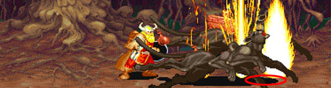

|
| |
LB오일과 보스와의 상관관계
보스에 따라 반응이 다르기도 하고 투척속도에 따라서 데미지가 조금씩 달라집니다.
vs. 텔'아린, 텔'엘레논, 오거, 만티코어, D.비스트 , 키메라
- 투척속도가 느릴수록 데미지가 더 많이 들어갑니다.
- 따라서 드워프가 가장 많은 데미지를 입힐 수 있으며 타 클래스도 연사속도를 12로 맞춘다면
데미지를 높힐 수 있습니다(드워프의 투척속도가 연사속도 12수준).
- 텔'아린, 텔'엘레논이 헤이스트를 시전한 후 쓰러진 상태에서 LB오일이 들어간다면 데미지가 2배로 늘어납니다.
vs. 다크 워리어, 비홀더, 그린/블랙/레드 드래곤, 프로스트 샐러맨더, synn
- 투척속도에 관계없이 데미지가 일정합니다.
- 다크 워리어는 HP가 반이하로 내려가는 시점에 광분상태로 돌입되면서 강제로 일어서게 됩니다.
- 비홀더의 경우 특수공격을 하는 도중에 LB오일에 맞을 경우 2배 이상의 데미지를 입습니다.
vs. 하피 , 나그파
- 하피의 경우 5발 이상 맞게 될 경우 일어나서 반격을 하게 됩니다.
- 나그파의 경우 누워서 맞아도 불길에 휩싸인 채로 튀어 오릅니다. |
| |
LB오일로 보스를 끝낼 수 있는 최소 수량 (1인/파이어 로드 소지/시프 기준)
다크 워리어 1 : 5개
텔`아린 (에잉모어 상공) : 8개 (드워프:7개)
오우거 : 6개 (드워프:5개)
비홀더 : 2개 (특수 공격중에 명중시)
맨티코어 : 8개 (드워프:6개)
D.비스트 : 8개 (드워프:7개)
키메라 : 9개 (드워프:8개)
레드 드래곤 : 9개
프로스트 샐러맨더 : 5개
텔'아린 (오버츄어) : 9개 이상 (드워프:9개)
다크 워리어 2 : 9개 이상
씬 : 9개 (8개에도 가능하지만 안정성을 위해 9개를 권장함) |
| |
|
| |
보스에게 가장 많은 데미지를 입힐 수 있는 방법
vs. Displacer Beast (디스플레이서 비스트)
3번째 불기둥이 머리에 맞거나 2번째~3번째 불기둥 사이가 머리부분에 걸치면 됩니다.
그러나 시프 외의 클래스는 보유 수량이 적은데다가(일반적으로 2-3개) 첫발은 데미지가 제대로 들어가지 않기 때문에
큰 효과는 기대 할 수 없습니다.

3번째 불기둥이 타원 영역안에 걸치도록 던지면 됩니다. |
vs. Chimera (키메라)
덩치가 커서 너무 멀리서만 던지지 않으면 됩니다.
첫 등장시 뒤를 쉽게 잡을 수 있으니 LB오일 공격을 쉽게 넣을 수 있습니다.
vs. Red Dragon / Synn (레드 드래곤 / 신)
이 둘에게는 일반 데미지보다 더욱 높은 일명 '오일크리'를 선사할 수 있습니다.
바위, 혹은 메테오(?)를 떨어트리려 올라갔다가 내려올 때를 노리면 됩니다.
머리가 완전히 내려오기 전에 조금 빨리 투척을 시작합니다(타이밍은 영상 참조).
머리 그림자 안에 불기둥이 두발만 들어가면 크리가 성립되지만 두번째 붗꽃이 머리 정중앙에서 터지게 되면
데미지가 반으로 줄어들게 됩니다(실제 타격 가능한 범위가 머리 그림자보다 작습니다).
|
| |
|
| |
vs. Frost Salamander (프로스트 샐러맨더)
샐러맨더가 쓰려졌다가 일어설 때 꼬리를 돌리는데 이때 명중시키면 크리티컬급의 데미지를 입힐 수 있습니다.
서 있는 경우에도 크리티컬 데미지가 가능은 하지만 위의 방법에 비하면 조금 힘듭니다.
너무 가까이서 투척시 꼬리에 맞을 위험이 있는데 불기둥 두발만 맞춰도 되므로 조금 떨어져서 던지는 것이 좋습니다.
맞추는 범위보다는 타이밍이 중요합니다.
뒤에서 가고일이 방해 할 수 있으니 주의. |
|
| |
|
| |
vs. Tel'arin (텔'아린)
2번째~3번째 불기둥이 머리 사이에서 터지면 됩니다.
급하다고 아무렇게나 던지면 제대로 된 데미지가 안나오니 확실하게 자리를 잡고 던지도록 합시다.
첫발을 무릎에 맞춘다는 느낌으로 던져도 됩니다. |
vs. Dark Warrior II (다크 워리어 2)
3번째 불기둥이 머리정도에 걸치게 투척하면 됩니다. 덩치가 커서 맞추기가 쉽습니다.
보통은 6발 정도 명중하는 타이밍에 광분상태가 되서 강제로 일어나니 5~7발에서 투척을 멈추고
다시 쓰러진 다음에 나머지를 투척하는게 좋습니다.
다만 파이터와 클레릭의 경우 투척속도가 빠르기 때문에 강제로 일어나기 전에 끝낼 수도 있습니다.
|
| |
시프로 헬하운드를 통해 얻을 수 있는 LB오일의 수량
타 클래스의 경우 스테이지 7(파괴의 숲) 이후에 나오는 상점에서 구입하기 전 까지는
상자에서 나오는 극 소량의 LB오일만을 소지 할 수 있습니다.
그러나 시프는 초반(스테이지 3)부터 헬하운드에게 픽 포켓을 통해 LB오일을 얻을수 있습니다.
얻을 수 있는 수는 곧 등장하는 헬하운드의 숫자와 같습니다.
그러나 실제로는 헬하운드 숫자보다 적은 수량을 얻을 수 밖에 없습니다.
(화염의 방패가 나올 확률도 있기 때문)
스테이지 3-A (저거노트) : 5개
스테이지 5-B (아인슨마을) : 13개
스테이지 6 (떡갈나무 요새) : 3개
스테이지 8-A (미로의 숲) : 32개 이상
라파엘의 동굴 : 10개
스테이지 9-A (화염의 대지) : 9개
스테이지 10-1 (게이트) : 10개 이상
스테이지 10-2 (오버츄어-텔'아린2 이후) : 1개
스테이지 10-4 (배틀 로얄) : 12개 이상
|